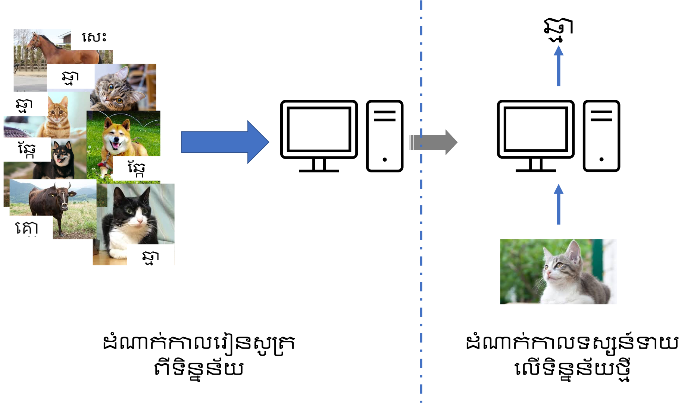

សេចក្តីផ្តើមអំពី Machine Learning¶
Machine Learning គឺសំដៅដល់បច្ចេកវិទ្យាដែលមានគោលដៅផ្តល់ឱ្យម៉ាស៊ីន(កុំព្យូទ័រ)នូវសមត្ថភាពដោះស្រាយបញ្ហាបានដោយខ្លួនឯង ពោលគឺមនុស្សមិនផ្តល់នូវបែបបទជាក់លាក់អំពីរបៀបដោះស្រាយណាមួយឡើយ។ ការរៀនពីរបៀបដោះស្រាយបញ្ហាក្នុងMachine Learningគឺធ្វើឡើងតាមរយៈការវិភាគលើទិន្នន័យជាគម្រូដែលផ្តល់ឱ្យដោយមនុស្ស។

បើធ្វើចំណាត់ថ្នាក់ក្រុមដោយផ្អែកលើប្រភេទគម្រូដែលផ្តល់ឱ្យម៉ាស៊ីនដើម្បីសង្កេត នោះគេអាចបែងចែកជា Supervised learning និង Unsupervised learning។ ចំពោះ Supervised learning ទិន្នន័យដែលផ្តល់ឱ្យម៉ាស៊ីនមានធាតុចូល(input)និងចម្លើយនៃបញ្ហាភ្ជាប់ជាមួយ។ ករណីនេះប្រៀបដូចជាករណីគ្រូផ្តល់លំហាត់និងដំណោះស្រាយជាមួយគ្នាឱ្យសិស្សរៀន។ផ្ទុយទៅវិញ Unsupervised learning ទិន្នន័យដែលផ្តល់ឱ្យម៉ាស៊ីនមានតែធាតុចូល(input)។ ករណីនេះអាចប្រៀបដូចជាករណីគ្រូផ្តល់តែលំហាត់ឱ្យសិស្សរៀនដោះស្រាយ សង្កេតដោយខ្លួនឯង។ ក្រៅពីនេះគេក៏អាចបែងចែកជាថ្នាក់reinforcement learningផងដែរ ប៉ុន្តែនៅទីនេះយើងមិនលើកយកថ្នាក់នេះមកសិក្សាទេ។
Supervised Learning¶
ចំពោះSupervised Learning, គម្រូនៃធាតុចូល \(x\) និង ចម្លើយនៃបញ្ហា \(y\) ជាច្រើន \(\left\{(x_i,y_i )\right\}_{i=1}^n \) ត្រូវបានផ្តល់ឱ្យ។អ្វីដែលMachine Learningធ្វើគឺចង់កំណត់នូវទំនាក់ទំនងរវាង \(x\) និង \(y\) ។ ដោយផ្អែកលើប្រភេទនៃតម្លៃyនោះគេអាចបែងចែកជា
ចំណោទតម្រែតម្រង់ Regression problem
ក្នុងករណីនេះ \(y\) ជាអថេរជាប់ ចំនួនពិត
Ex: ប៉ាន់ស្មានតម្លៃអចលនទ្រព្យ \(y=120000, 498302.25…\)
ចំណោទចំណាត់ថ្នាក់ទិន្នន័យDiscrimination problem/ Classification
ក្នុងករណីនេះ \(y\) ជាអថេរដាច់
Ex: ចំណាត់ថ្នាក់ប្រភេទសារ spam(\(y=1\)) , not spam(\(y=0\)) (input x:mail text)
Ex: កំណត់លេខសរសេរដៃ \(y=0,1,2,…,9\). (input \(x\): រូបភាព)
Unsuperivsed Learning¶
ចំពោះUnupervised Learning, គម្រូនៃធាតុចូល \(x\) ជាច្រើន\(\left\{x_i\right\}_{i=1}^n\) ត្រូវបានផ្តល់ឱ្យដោយគ្មានគូចម្លើយនៃបញ្ហា \(y\) ។ អ្វីដែលMachine Learningធ្វើគឺចង់ទាញរកនូវលក្ខណៈឬទម្រង់ពិសេសពីទិន្នន័យ \(x\) ។ បើនិយាយពីMachine learningបែបស្ថិតិវិទ្យា បញ្ហាប្រភេទនេះមានដូចជា
Dimensionality reduction
ការបង្ហាញទិន្នន័យដែលមានវិមាត្រខ្ពស់មកជាវិមាត្រទាបដោយរក្សាលក្ខណៈពិសេសនៃទិន្នន័យ
Feature selection
ការកំណត់នូវធាតុសំខាន់ដែលមានឥទ្ធិពលលើការប៉ាន់ស្មានអ្វីមួយ
Clustering
ការធ្វើចំណាត់ក្រុមដោយស្វ័យប្រវត្តិដោយផ្អែកលើលក្ខណៈនៃទិន្នន័យដែលមាន